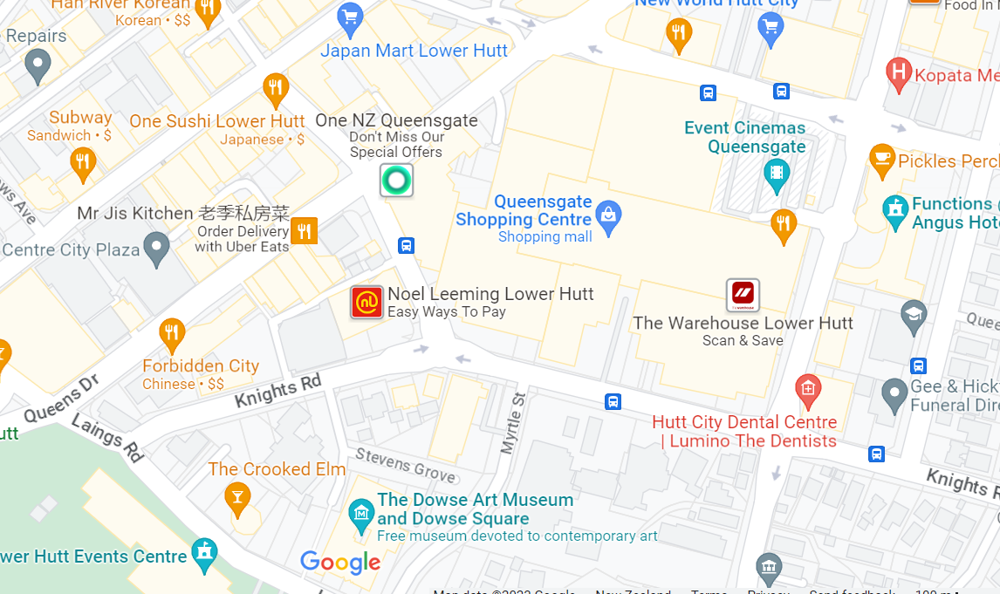

Local Shortcut
Find local shortcuts. Somewhere you cannot find on google maps. hover over pin to learn more.

Queen street Shortcut
Walk through the main entrance and take the small lift to the level 5. This will take you to the adjacent street quickly.